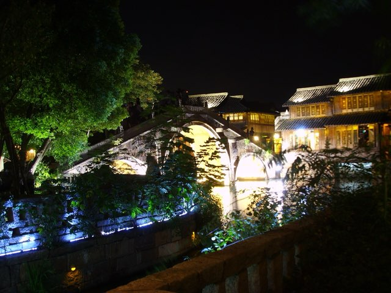

China秋
Two weeks, first time on the mainland for all of us. Baseline window Thu 8 Oct → Thu 22 Oct 2026, but we're flexible across Oct–Nov — and the research says shift to November (see When to go). 13 in-country nights either way. Seven routes on the table; one to pick.


Every route runs on 240-hour visa-free transit — no L visa. The clock starts 00:00 the day after we enter the mainland, so the arrival day is free. Confirmed active for 2026: 65 ports, 24 regions, cross-provincial travel allowed. This single rule shapes all seven itineraries.
- Max ~10 days on the mainland; HK & Macau time doesn't count.
- Trip must start in one region and exit to a different one — HK counts, so AUS → mainland → HK → AUS qualifies.
- A confirmed onward ticket out within 240 hrs is checked at entry.
The seven routes
Each is a complete itinerary inside the same 13-night envelope (shown on the Oct baseline dates — shift wholesale for a Nov window). Tap a route to open its day-by-day, photos, and TWOV clock.
When to go
We're flexible across Oct–Nov. Two collisions in the baseline window, and November's weather is actually better — the research points one way.
Collision #1 — Canton Fair
Autumn 2026 phases: Oct 15–19 · Oct 23–27 · Oct 31–Nov 4. Guangzhou hotels run 2–3× and sell out during phases — the baseline Route A/F Guangzhou stay walks into Phase 1.
Collision #2 — HK trade-fair season
Mid-Oct through early Nov is Hong Kong's high hotel corridor (Electronics, Optical, Wine fairs). Late Nov is noticeably cheaper for the same rooms.
Recommended windows
| Route A / G / F | Thu Nov 5 → Thu Nov 19 Guangzhou fully post-fair · Shanghai golden · home a week before Thanksgiving |
| Route B / C / E | Thu Oct 29 → Thu Nov 12 Huangshan / Zhangjiajie land Nov 5–8: peak foliage, prime sea of clouds |
| Tune-up | Departing Tuesday instead of Thursday puts the Wuzhen guesthouse on Wed–Thu nights — cheaper, emptier canals — and weekday transpacific fares price lower. |
Transpacific fares hold October-shoulder pricing until Thanksgiving week (Nov 26). Any window home by ~Nov 20 prices the same. TWOV math is date-independent.
Decision matrix
Scored 1–5 per dimension (5 = best for this kind of trip). A heuristic, not a verdict — Route F tops the paper score, but it trades away Shanghai and Wuzhen.
Route picker
Everyone in the group: tap what matters most to you (up to 3). The matrix does the rest — compare answers over dinner.
What do you care about most?
Nothing selected = overall totals. Scores come straight from the decision matrix above.
Eat here — the foodie file
The tables that need a plan, ranked by booking lead. Full cross-city index (walk-in classics, dish lists) lives in the wiki's restaurant page.
| Table | Book | Why |
|---|---|---|
| The Chairman⌖Hong Kong · all routes | quarterly drop — 9am, 1st of month before the quarter | 1★, former Asia's 50 Best #1. Hardest table on this list; gone in minutes. Nov trip = the Sep 1 drop. Book here ↗ |
| Lung King Heen⌖Hong Kong | 30 days | 2★ Cantonese at the Four Seasons; HKD 700+10% min pp |
| Ying Jee Club⌖Hong Kong | 1 week | 2★ Cantonese, Central |
| T'ang Court (Langham Xintiandi)⌖Shanghai · A/G | 1 week | 2★ Cantonese (upgraded in the 2026 Guide) |
| Fu 1088⌖Shanghai · A/G | 1 week | 1★ Shanghainese in a 1930s villa; the red-braised pork |
| Yu Yue Heen⌖Guangzhou · A/F | 1 week | 1★ Cantonese, Four Seasons |
| Mr. & Mrs. Bund⌖Shanghai · A/G | 3–5 days | Paul Pairet's brasserie, Bund view (Ultraviolet is closed) |
Walk-in legends (queue, don't book)
Hong Kong
- Kam's Roast Goose / Yat Lok — 1★ roast goose
- Tim Ho Wan — baked char siu buns
- Mak's Noodle — wontons since 1920
Shanghai
- Jia Jia Tang Bao — XLB, 127 Huanghe Lu, 10:00 sharp
- Lai Lai Xiao Long — Bib Gourmand crab-roe XLB
Chongqing (Route G)
- Zhao Er Hotpot — the local institution; duck blood, fresh tripe
- Nine-grid hotpot anywhere packed — order 微辣 (mild!)
- Xiaomian stalls — CNY 12 breakfast religion
Guangzhou / Yangshuo
- Taotaoju / Panxi — trolley dim sum since the 1880s
- Beer fish on Xianqian Jie · Guilin mifen anywhere
Our take

Route A
Wuzhen is the trip-maker — nothing else has that slow canal-town night — and the direct PVG → AUS exit saves a day. Best food-and-scenery balance with the lowest friction.

Route G
Route A's skeleton with Chongqing in the food slot: nine-grid hotpot, xiaomian, and the Hongya Cave nightscape. For a group of friends who eat, this is A's strongest challenger.

Route F
Li River karst with zero flights, a 4-day TWOV buffer, and six HK nights. The paper winner — if the group can live without Shanghai and Wuzhen.

Route C
Most of Route B without the Xiamen long-leg. Hangzhou + Huangshan get real time and the clock keeps a comfortable buffer. The "landscape painting" version.

Route E
Zhangjiajie looks like nowhere else. Two internal flights are the cost. Compare with Route F first — it gets a cousin of this landscape by rail.

Route B
11 hours of train across 5 segments inside a <12-hour TWOV buffer. One slipped train turns into a real problem. Take C — it's most of B — or commit to E.
Before we go
Cross-cutting prep
- Payments: Alipay + WeChat Pay set up before landing.
- Connectivity: regional HK+mainland eSIM, two VPNs installed at home.
- Docs: passport ≥6 mo validity, arrival card the night before entry, onward ticket.
- Weather flex: book mountain hotels refundable; keep one unplanned day; insurance covers weather delay.
- Packing: fall layers; Nov window adds one warm layer (summit ~32°F); real shoes for E/F.
Bookmarks
The links we keep reaching for — official rules, booking channels, and the blogs worth reading before we go.